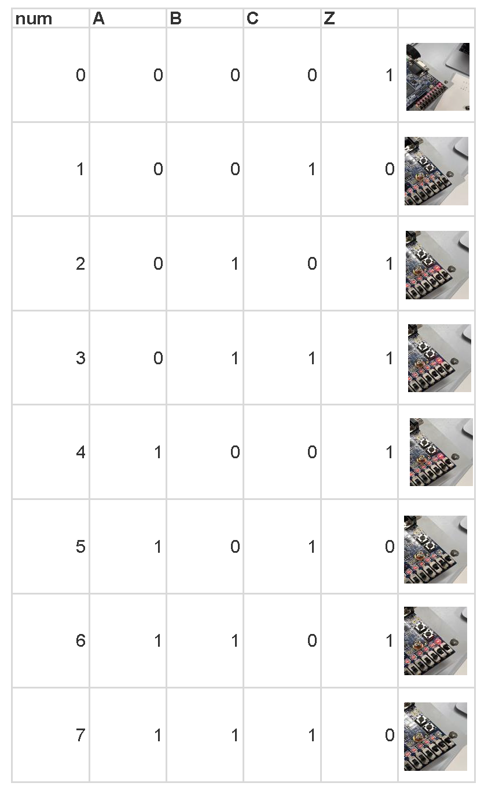

数字电路逻辑设计
实验日期：2023/10/9
地点：东3-406
实验目的
- 了解数字电路基础知识
- 掌握简单数字逻辑电路的设计
- 学习FPGA开发工具
实验内容
用QUARTUS软件和DE10开发板设计并实现如下逻辑功能
-
输入是三位二进制数A，B，C，要求当输入是2或3的倍数时输出等于逻辑1，其它情况，输出等于0。
-
设计并实现一位二进制全加器（输入是一位二进制加数、被加教和低位进位，共3个逻辑变量）。
-
【探究】某客厅四周有4个房间，每个房间门口有一个开关，客厅中间有一盏灯A。试设计一个逻辑电路，要求每个开关都能控制
灯A的亮灭，并在DE10开发板上模拟此逻辑电路的功能。
实验器材
- QUARTUS软件
- DE10开发板
- 电脑
实验一：判断2或3的倍数
1. 分析真值表
| num | A | B | C | Z |
|---|---|---|---|---|
| 0 | 0 | 0 | 0 | 1 |
| 1 | 0 | 0 | 1 | 0 |
| 2 | 0 | 1 | 0 | 1 |
| 3 | 0 | 1 | 1 | 1 |
| 4 | 1 | 0 | 0 | 1 |
| 5 | 1 | 0 | 1 | 0 |
| 6 | 1 | 1 | 0 | 1 |
| 7 | 1 | 1 | 1 | 0 |
由于总情况较少，所以选择打表的方式列写代码。
2. 利用QUARTUS INTEL FPGA软件自带的Multisim软件先进行模拟
逻辑设计输入 task1.vhd
---------库说明与库引用------------
library IEEE;
use IEEE.std_logic_1164.all;
use IEEE.std_logic_unsigned.all;
use IEEE.numeric_std.all;
use IEEE.std_logic_arith.all;
---------------------------------
---------实体定义Task1------------
entity Task1 is
port ( A,B,C: in std_logic;
Z: out std_logic);
end Task1;
---------------------------------
----------结构体定义 BEHAV---------
architecture BEHAV of Task1 is
begin
----------进程语句 P1---------------
P1:process(A,B,C)
variable tmp:std_logic_vector(2 downto 0); -- 定义变量tmp（std_logic_vector）记录ABC的输入
begin
tmp:=A&B&C;-- 将ABC的输入值连接
--case语句 根据不同情况输出不同的Z值
case tmp is
when "000" => Z<='1';
when "001" => Z<='0';
when "010" => Z<='1';
when "011" => Z<='1';
when "100" => Z<='1';
when "101" => Z<='0';
when "110" => Z<='1';
when "111" => Z<='0';
when others => Z<='0';
end case;
end process;
---------------------------------
end BEHAV ;
---------------------------------
逻辑设计仿真 test_tb.vhd
---------库说明与库引用------------
library IEEE;
use IEEE.std_logic_1164.all;
use IEEE.std_logic_unsigned.all;
use IEEE.numeric_std.all;
use IEEE.std_logic_arith.all;
---------------------------------
------实体定义TEST_tb仿真元件--------
entity TEST_tb is
end TEST_tb;
---------------------------------
----------结构体定义 BEHAV---------
architecture BEHAV of TEST_tb is
----------引用元件Task1---------
component Task1 is
port ( A,B,C: in std_logic;
Z: out std_logic);
end component;
signal A,B,C,Z: std_logic;--定义实参，方便后续控制输入输出
begin
U1: Task1 port map (A=>A,B=>B,C=>C,Z=>Z);--端口映射，将ABC的值输入到元件Task1中
P1: process
begin -- 仿真
A<='0';B<='0';C<='0';wait for 10ns;
A<='0';B<='0';C<='1';wait for 10ns;
A<='0';B<='1';C<='0';wait for 10ns;
A<='0';B<='1';C<='1';wait for 10ns;
A<='1';B<='0';C<='0';wait for 10ns;
A<='1';B<='0';C<='1';wait for 10ns;
A<='1';B<='1';C<='0';wait for 10ns;
A<='1';B<='1';C<='1';wait for 10ns;
end process;
end BEHAV;
仿真结果

根据波形图结果，可知，该元件的代码编写正确，可以进行下一操作。
3. 生成编程文件
- 新建project

- 导入关于元件的文件task1.vhd

- 编译生成文件，并导入DE10芯片
点按步骤如下：
- Analysis&Synthesis，可在RTL Viewer中查看逻辑线路
- Fitter
- Assemble

- pin planner，进行线脚安排
- ABC以开关的形式输入输出
- Z以LED的方式显示
实验成果

实验二：二进制全加器
1. 分析真值表

2. 仿真模拟
逻辑设计输入 task2.vhd
library IEEE;
use IEEE.std_logic_1164.all;
use IEEE.std_logic_unsigned.all;
use IEEE.numeric_std.all;
use IEEE.std_logic_arith.all;
---------定义实体--------------------
entity Task2 is
port ( A,B,C0: in std_logic;
C,Z: out std_logic);
end Task2;
---------定义结构体--------------------
architecture BEHAV of Task2 is
begin
P1:process(A,B,C0)
variable tmp:std_logic_vector(2 downto 0);--变量tmp记录ABC0的输入值
begin
tmp:=A&B&C0;
case tmp is -- case语句根据ABC0不同的值输出不同的C与Z
when "000" => C<='0';Z<='0';
when "001" => C<='0';Z<='1';
when "010" => C<='0';Z<='1';
when "011" => C<='1';Z<='0';
when "100" => C<='0';Z<='1';
when "101" => C<='1';Z<='0';
when "110" => C<='1';Z<='0';
when "111" => C<='1';Z<='1';
when others => C<='0';Z<='0';
end case;
end process;
end BEHAV ;
逻辑设计仿真 test_tb.vhd
library IEEE;
use IEEE.std_logic_1164.all;
use IEEE.std_logic_unsigned.all;
use IEEE.numeric_std.all;
use IEEE.std_logic_arith.all;
entity TEST_tb is
end TEST_tb;
architecture BEHAV of TEST_tb is
component Task2 is
port ( A,B,C0: in std_logic;
C,Z: out std_logic);
end component;
signal A,B,C0,Z,C: std_logic;
begin
U1: Task2 port map (A=>A,B=>B,C0=>C0,Z=>Z,C=>C);
P1: process
-----------主要的仿真部分-------------------------------------------------
begin
A<='0';B<='0';C0<='0';wait for 10ns;
A<='0';B<='0';C0<='1';wait for 10ns;
A<='0';B<='1';C0<='0';wait for 10ns;
A<='0';B<='1';C0<='1';wait for 10ns;
A<='1';B<='0';C0<='0';wait for 10ns;
A<='1';B<='0';C0<='1';wait for 10ns;
A<='1';B<='1';C0<='0';wait for 10ns;
A<='1';B<='1';C0<='1';wait for 10ns;
end process;
end BEHAV;
仿真结果

与预期一致，所以可以进行下一步操作
3. 生成编程文件
-
编译输出，得到以下逻辑图

-
pin planner
- A, B, C0对应三个开关
- C与Z对应两盏LED灯
实验成果

上图对应A=0, B=0, C0=0的情况，输出C=0，Z=0的情况。

上图对应A=0, B=1, C0=0的情况，输出C=0，Z=1的情况。

上图对应A=1, B=1, C0=0的情况，输出C=1，Z=0的情况。

上图对应A=1, B=1, C0=1的情况，输出C=1，Z=1的情况。
实验三：开灯关灯的探究性实验 !注意：这个部分我写的些许有点错误，直接单数开关开则打开的思路即可
1. 分析电路逻辑
ABCD作为四个开关，任意的改变状态都将改变电灯的状态，不同于上面的电路，该电路没有真值表。
2. 仿真模拟
设计元件 task3.vhd
library IEEE;
use IEEE.std_logic_1164.all;
use IEEE.std_logic_unsigned.all;
use IEEE.numeric_std.all;
use IEEE.std_logic_arith.all;
------------定义实体Task3-----------------------------------
entity Task3 is
port ( A,B,C,D: in std_logic;
Z: out std_logic);
end Task3;
architecture BEHAV of Task3 is
begin
---------关键部分：process-----------------------------------
P1:process
---------定义变量 记录开关A，B，C，D，Z先前的状态----------------
variable mA:std_logic:='0';
variable mB:std_logic:='0';
variable mC:std_logic:='0';
variable mD:std_logic:='0';
variable mZ:std_logic:='0';
variable tmp:std_logic:='0';
begin
if (mA /= A) then --如果A开关状态发生改变，下方各个结构同理
mA:=A; mZ:=not mZ;Z<=mZ; --改变mA的值，并且输出与Z的记录值相反的值
end if;
if (mB /= B) then
mB:=B; mZ:=not mZ;Z<=mZ;
end if;
if (mC /= C) then
mC:=C; mZ:=not mZ;Z<=mZ;
end if;
if (mD /= D) then
mD:=D; mZ:=not mZ;Z<=mZ;
end if;
end process;
end BEHAV ;
仿真task3_tb.vhd
library IEEE;
use IEEE.std_logic_1164.all;
use IEEE.std_logic_unsigned.all;
use IEEE.numeric_std.all;
use IEEE.std_logic_arith.all;
entity TEST_tb is
end TEST_tb;
architecture BEHAV of TEST_tb is
component Task3 is
port ( A,B,C,D: in std_logic;
Z: out std_logic);
end component;
signal A,B,C,D,Z: std_logic;
begin
U1: Task3 port map (A=>A,B=>B,C=>C,D=>D,Z=>Z);
------------仿真过程-------------------------------------------
P1: process
begin
A<='0';B<='0';C<='0';D<='0';wait for 10ns;
A<='0';B<='0';C<='0';D<='1';wait for 10ns;
A<='1';B<='0';C<='0';D<='1';wait for 10ns;
A<='0';B<='0';C<='0';D<='1';wait for 10ns;
end process;
end BEHAV;
仿真结果
任意改变ABCD四个开关中任意状态，Z就会输出与原来相反的结果，仿真结果正确。
3. 生成编程文件
- 编译输出
-
Pin Planner
-
ABCD对应四个开关
- Z对应一个LED灯
实验成果
结果分析，由于这个代码的问题，也就是在芯片最开始执行结构体部分的代码时，由于mA与A并不一定相匹配，所以刚刚开始，Z的灯可能混乱闪烁。但是一段时间后，也就是当所有mA，mB，mC，mD都已经与现实情况相匹配以后，就能够正常显示。